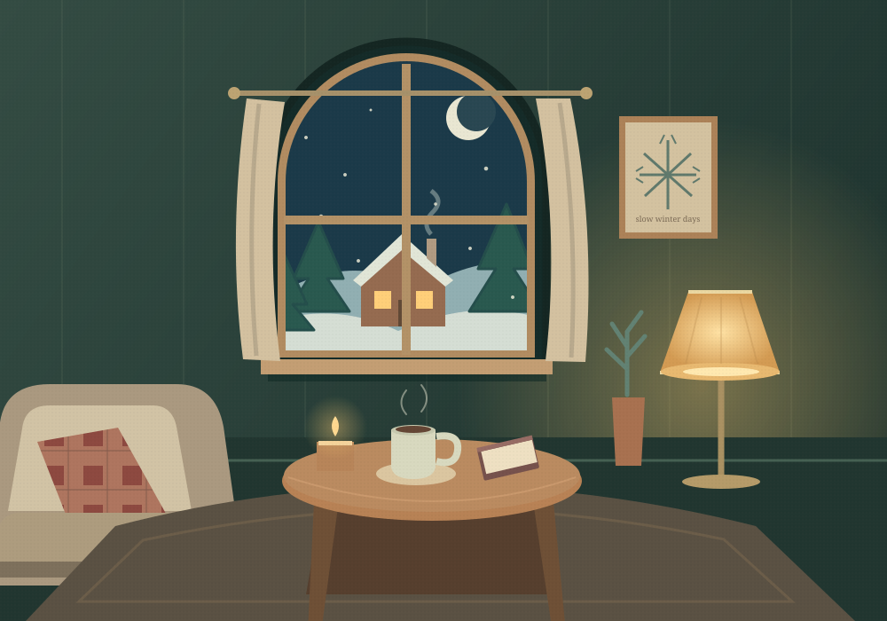

Новая глава совсем рядом
Маленькая зимняя коллекцияЗИМА 2026 — 2027
Немного зимы.
На любом сайте.
Тихий снег. Тёплые огоньки.
И то самое «хорошо быть дома».
Добавь настроение своему сайту.
Без тяжёлых библиотек и лишнего шума.
01 Мастерская настроения
живое превью
a little winter, please
Пусть мир немного подождёт.
вечер, который никуда не спешитДвижение включено
◌ Без зависимостей⌁ Уважает reduced motion↗ Для любого сайта♡ Открытый код · MIT
02 Ещё немного хорошего
маленькие вещи, большое настроениеНажми — внутри кое-что хорошее
03 / Забрать с собойХорошее настроение.
Хорошее настроение.
Пара строк кода.
Обычный HTML, React, Vue или твой любимый
хаос на JavaScript. Зима подружится со всеми.
Современная зима, без лишнего.
Тактильность и тёплая несовершенность из визуальных направлений 2026. Спокойное движение, простое отключение и изолированные стили. А 2027 — хороший повод начать с чего-то приятного.
Источники и решения ↗стало чуть теплее.